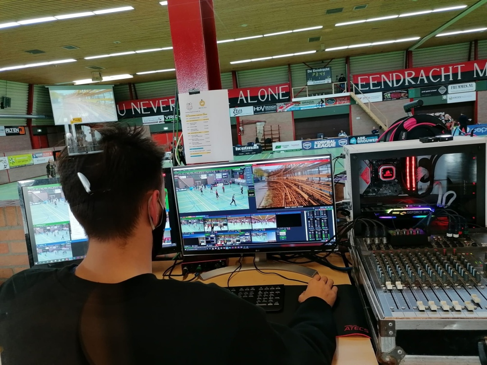
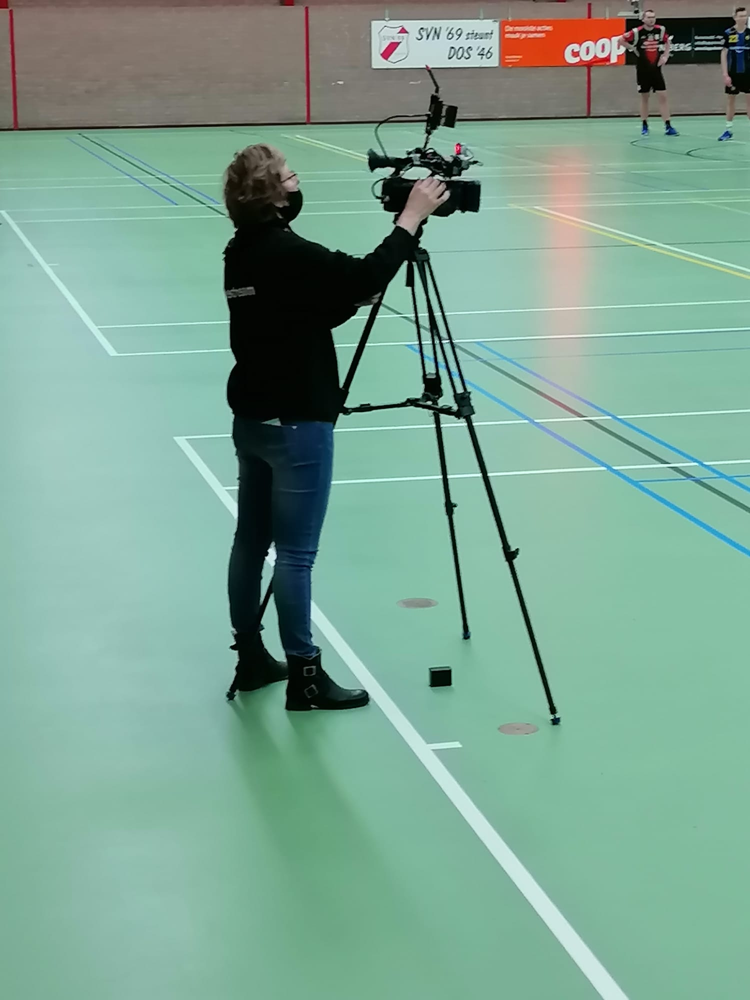
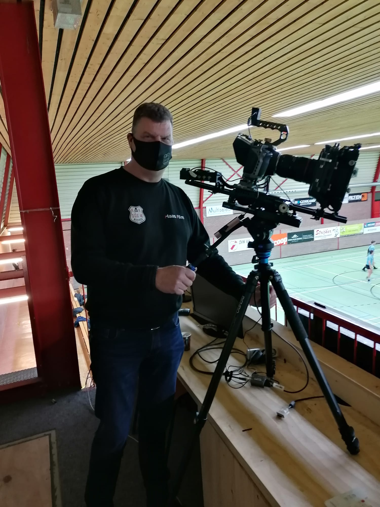
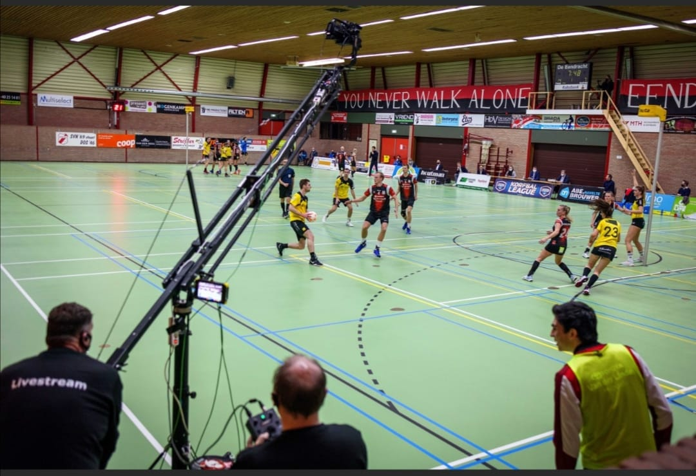
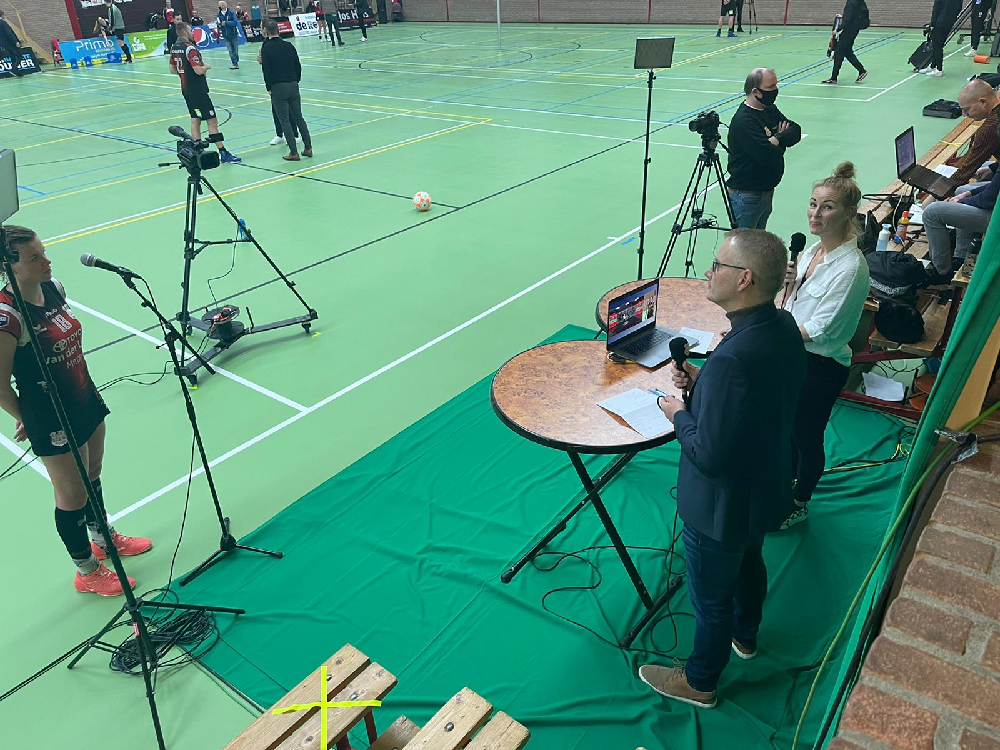
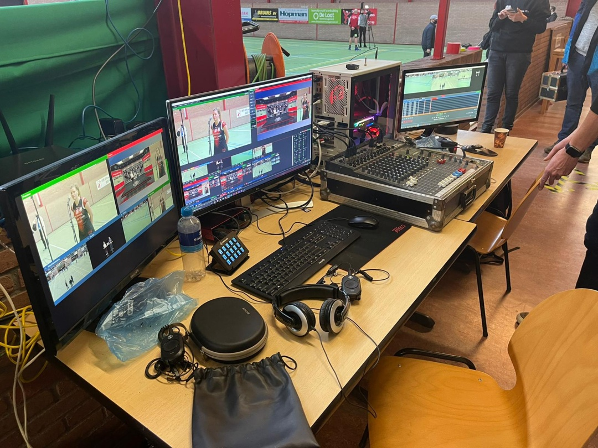

...er minimaal 14 mensen tweewekelijks nodig zijn voor
de livestream van DOS’46?
...er vier camera’s gezamenlijk 300 GB
aan beeldmateriaal vastleggen?

...er 400 meter kabel door de sporthal ligt per wedstrijd?
Jaarlijks wordt dit wel minder, doordat er steeds vaker gebruik wordt gemaakt
van de moderne “NDI techniek”. Een techniek waarbij er draadloos gewerkt wordt.
...er een door De Haas zelf samengestelde,
en gebouwde computer gebruikt wordt waar
alle signalen van buitenaf binnenkomen?

...naast deze computer nog vier laptops nodig zijn?
...het livestreamteam dit seizoen gaat experimenteren met de communicatie tussen
regie en overige crewleden? Er wordt een draadloos systeem gebruikt,
waarbij de regisseur alle livestreamteamleden kan aanspreken in de zaal.

...een uitzending op Eyecons van één wedstrijd in totaal 2 uur duurt?
...er gemiddeld zo’n 9.000 aansluitingen
kijken naar de wedstrijden op Eyecons?
Per aansluiting kunnen dus meerdere mensen kijken.

…de gemiddelde kijktijd per wedstrijd op 5600 uur zit?
… het livestreamteam van DOS’46 ook deels aanwezig
was bij de Korfbal Leaguefinale?

… het livestreamteam van DOS’46 ook andere sportfinales ondersteunt?
Zoals bijvoorbeeld het beachhandbaltoernooi. Hiervoor ontvangt het KVNK een mooie
bijdrage die ingezet wordt voor de DOS’46 livestream.

… het livestreamteam altijd nog meer handen kan gebruiken?
Lijkt het jou leuk om komend jaar mee te werken in het professionele
livestreamteam van DOS’46? Meld je aan via Remco de Haas (livestream@dos46.nl).
Sinds vorig jaar hebben wij bij
DOS’46 een heus data team. Dit
team bestaat uit Ryanne van Kampen, Martijs van Schie en Edward
Jonkman.
Ryanne werkt als data analist en is
binnen het data team onder andere
verantwoordelijk voor de aanlevering
van alle relevante data. Mede door
haar werk als data analist heeft Ryanne vaak een hele scherpe kijk op de
data en relevantie ervan.
Martijs werkt op de sales afdeling van
ENGIE. Martijs koppelt de data aan de
videobeelden van wedstrijdsituaties
van DOS’46 en van de tegenstander.
Edward zorgt voor een analyse van
de tegenstander op basis van de beschikbare data.
Vanuit een Korfbal League wedstrijd
wordt bijna elke actie bijgehouden.
Hierbij moet je denken aan hoe vaak
iemand schiet, hoe vaak iemand
scoort en wie een assist geeft tot aan
de duur van een teamaanval aan toe
Het levert ons heel veel data op die
wij elke zondag en maandag verwerken tot een rapportage voor de staf.
Het is erg belangrijk om te weten, dat
data/statistieken op zichzelf niet veel
zeggen, maar altijd een gevolg zijn van
een korfbalactie.
Het juist interpreteren en lezen van data is dus essentieel.
Elke dinsdag leveren wij een compleet
pakket aan de trainers van het eerste,
Edwin en Rick. Aan de hand van onze
bevindingen werken zij het plan voor
de eerstkomende wedstrijd definitief
uit.
Het pakket bestaat uit alle beschikbare data die we hebben. En bevat ook
de analyse van aanvallen en verdedigingen van de tegenstander en individuele spelerspaspoorten van alle
tegenstanders.
Hierop staan de sterke, zwakke punten
van de tegenstanders, en de relevante
statistieken. Tevens staan er op een
afgeschermde website diverse clipjes
met beelden van de tegenstander.
VOOR ELKE WEDSTRIJD
ZIEN WIJ GEMIDDELD
125
AANVALLEN
VAN EEN TEGENSTANDER
ZIEN WIJ GEMIDDELD
100
VERDEDIGINGEN
VAN EEN TEGENSTANDER
BEKIJKEN WE IN TOTAAL RUIM
3.5
UUR KORFBAL BEELDEN
BEWERKEN WE ZO’N
4MB
INDIVIDUELE
SPELERSPASPOORTEN
ZIEN WIJ ZO’N
250
INDIVIDUELE CLIPS
VAN EEN TEGENSTANDER
MAKEN WE ZO’N
10
INDIVIDUELE
SPELERSPASPOORTEN
EKNELE LEUKE STATISTISCHE FEITJES
- Wist je dat Amber het zuiverst was het afgelopen jaar, 27% van haar doelpogingen troff en doel
- De beste in de KL maakt ruim 34% van alle doelpogingen
- Pascal in de top 3 rebounders staat van de hele KL van het afgelopen jaar
- DOS’46 er 1.10 min over doet om te scoren
- Leander bij (direct en indirect) 54% van alle doelpunten in zijn vak betrokken is
- Pascal en Eline hem op de voet met resp. 42% en 37%
- Geen enkele heer van DOS’46 een strafworp heeft gemist.
- Edwin en Rick nog op doorloopballen moeten trainen, slechts 1 op 4 wordt gemaakt
- Een KL wedstrijd ongeveer 75 aanvallen per wedstrijd telt
- DOS’46 het afgelopen jaar het op 1 na minste aantal doelpunten maakte, zo’n 17 per wedstrijd....
- Maar wel de best verdedigende ploeg was van de hele KL, < 17 doelpunten per wedstrijd gemiddeld tegen
Het afgelopen jaar hebben we een
zogenaamde. ‘Goal share’ model ontwikkeld.
Niet alleen alle doelpunten worden
meegenomen hierin, maar ook alle
rebounds, assists, onderscheppingen,
vrije ballen meegekregen etc. worden
meegewogen.
Hiermee krijgen spelers/speelsters die
niet vaak zelf scoren, wel een waarde in
het aandeel in een doelpunt. En levert
ons dit vaak interessante inzichten op
Ook hebben we een model ontwikkeld waarin we de score per kwartier
per ploeg/spelers kunnen inzien.
Sommige spelers beginnen altijd erg
goed aan een wedstrijd, en worden
minder naarmate de wedstrijd vordert, of andersom natuurlijk. En deze
info kan de staf doen besluiten om
halverwege de helft te wisselen van
een specifi eke tegenstander.
Zoals je leest, zijn wij een multidisciplinair team met nog heel veel gave
ideeën en plannen.
Het is erg belangrijk om te weten, dat
data/statistieken op zichzelf niet veel
zeggen, maar altijd een gevolg zijn van
een korfbalactie.
Vind jij data, statistieken en/of analyses interessant en lijkt het jou leuk
om hierin een bijdrage te kunnen leveren?
Of wil je gewoon wat meer informatie
hebben? Of heb je nog vragen?
Schiet één van ons dan aan.
Wij helpen je graag en elke
versterking is welkom!